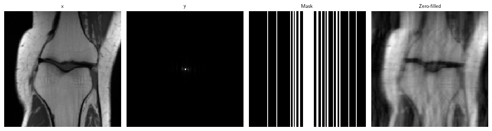
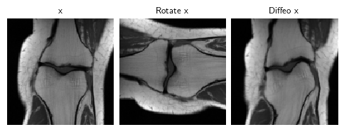
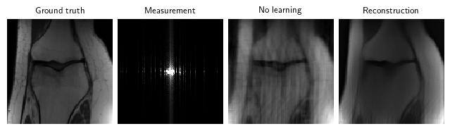
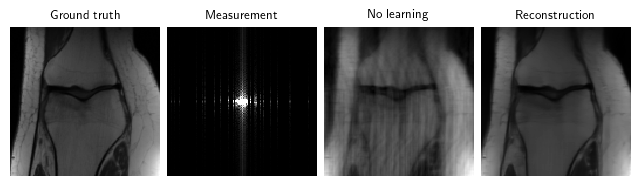
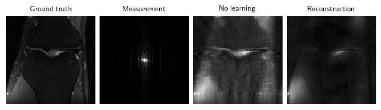
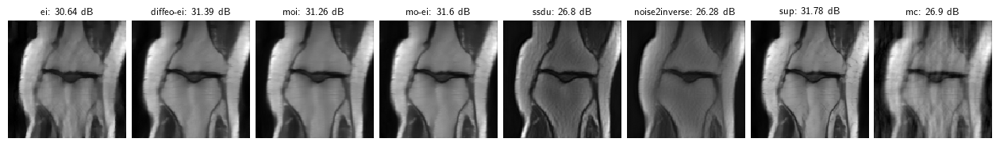

Benchmarking self-supervised methods for imaging without ground truth
Self-Supervised Machine Learning workshop, 24-25th Feb
Introduction
- Aim: first benchmark of all SotA self-supervised methods for MRI reconstruction;
- Aim: demo of self-supervised learning using DeepInverse library. Install using
pip.
Find the full experiments with more comparisons in the paper: “Benchmarking Self-Supervised Methods for Accelerated MRI Reconstruction”, 2025.
. . .
Notes:
- We assume that measurements are generated from multiple random operators that span the whole space as this is required for many of the algorithms.
- We demonstrate feedforward methods \(\hat{x}=f_\theta(y)\) rather than generative models.
- We assume noiseless data; some methods can be easily generalised to noisy scenarios.
0. Define experiment training
First, define all common code for training (MRI physics, masking, model, data and metrics).
We provide many easy-to-use classes for MRI-related experiments. See Example - “Tour of MRI functionality in DeepInverse” for more.
We train with a custom FastMRI subset of 973 images created using deepinv.datasets.FastMRISliceDataset.save_simple_dataset (download here), and load it with deepinv.datasets.SimpleFastMRISliceDataset.
Note: by using this dataset, you confirm that you have agreed to and signed the FastMRI data use agreement.
file_name = "fastmri_knee_singlecoil.pt"Define physics & model
Define MRI physics where each image is masked with a random Gaussian-weighted Cartesian mask at 4x acceleration. Define an unrolled MoDL network with a small UNet backbone (3 scales) and 3 unrolled iterations. See Example - “Tour of MRI functionality in DeepInverse” for other examples.
physics_generator = dinv.physics.generator.GaussianMaskGenerator(
img_size=(128, 128), acceleration=4, rng=rng, device=device
)
physics = dinv.physics.MRI(img_size=(128, 128), device=device)
denoiser = dinv.models.UNet(2, 2, scales=3)
model = lambda: dinv.utils.demo.demo_mri_model(denoiser=denoiser, num_iter=3, device=device).to(device)Define data
Define FastMRI small train and test datasets resized for speed, then simulate random k-space measurements using the physics, then load the generated measurements. We keep the test set at maximum 50 images for speed.
from torchvision.transforms import Resize
train_dataset = dinv.datasets.SimpleFastMRISliceDataset("data", file_name=file_name, transform=Resize(128), train=True, train_percent=0.8, download=True)
test_dataset = dinv.datasets.SimpleFastMRISliceDataset("data", file_name=file_name, transform=Resize(128), train=False, train_percent=0.8,)
path = dinv.datasets.generate_dataset(train_dataset=train_dataset, test_dataset=test_dataset, physics=physics, physics_generator=physics_generator, save_physics_generator_params=True, overwrite_existing=False, device=device, save_dir="data", batch_size=1)
train_dataset, test_dataset = dinv.datasets.HDF5Dataset(path, split="train", load_physics_generator_params=True), dinv.datasets.HDF5Dataset(path, split="test", load_physics_generator_params=True)
train_dataloader, test_dataloader = torch.utils.data.DataLoader(train_dataset, shuffle=True), torch.utils.data.DataLoader(torch.utils.data.Subset(test_dataset, range(min(len(test_dataset), 50))))x, y, params = next(iter(test_dataloader))
dinv.utils.plot({
"x": x,
"y": y,
"Mask": params["mask"],
"Zero-filled": physics.A_adjoint(y, **params)
}, figsize=(15, 4))
Define trainer
def train(loss: dinv.loss.Loss, epochs: int = 0):
_model = model()
trainer = dinv.Trainer(
model = _model,
physics = physics,
optimizer = torch.optim.Adam(_model.parameters(), lr=1e-3),
train_dataloader = train_dataloader,
eval_dataloader = test_dataloader,
epochs = epochs,
losses = loss,
scheduler = None,
metrics = dinv.metric.PSNR(complex_abs=True),
ckp_interval = 10,
device = device,
eval_interval = 1,
save_path = "models",
plot_images = False,
wandb_vis = False,
)
trainer.train()
trainer.plot_images = True
return trainer1. Equivariant imaging methods
1a. Equivariant imaging (EI)
The EI self-supervised loss [1] assumes that the set of signals is invariant to a group of transformations in order to learn from incomplete measurement data alone:
\(\mathcal{L}_\text{EI}=\lVert T_g \hat{x} - f(A(T_g \hat{x}), A)\rVert_2^2\)
where \(\hat{x}=f(y, A)\) is a reconstructed signal and \(T_g\) is a transformation sampled at random from a group \(g\sim G\). EI was applied to MRI in [2]. Note that this works even when \(A\) is fixed across the dataset as it constructs multiple virtual operators.
Implementation: loss functions abstracted into EILoss(...), keeping a modular structure.
. . .
See also: Example - “Self-supervised learning with Equivariant Imaging for MRI”; Example - “Image transformations for Equivariant Imaging”; Docs - deepinv.loss.EILoss.
[1] Chen D., Tachella J. & Davies M., “Equivariant Imaging: Learning Beyond the Range Space”
[2] Chen D., Tachella J. & Davies M., “Robust Equivariant Imaging: a fully unsupervised framework for learning to image from noisy and partial measurements”
1a. Equivariant Imaging Results
loss = [
dinv.loss.MCLoss(),
dinv.loss.EILoss(transform=dinv.transform.Rotate())
]
# Set epochs > 0 to train the model
trainer = train(loss, epochs=0)
# Load pretrained model for 50 epochs, test on test dataset, and save sample reconstruction
trainer.load_model("models/pretrained/ei.pth.tar")
results["ei"] = trainer.test(test_dataloader)
physics.update_parameters(**params)
results["ei"]["sample"] = trainer.model(y, physics)Test: 98%|███████████████████████████████████████████████████████████████████████▌ | 49/50 [00:09<00:00, 5.69it/s, PSNR=30.6, PSNR no learning=26.9]Test: 100%|█████████████████████████████████████████████████████████████████████████| 50/50 [00:09<00:00, 5.24it/s, PSNR=30.6, PSNR no learning=26.9]Test results:
PSNR no learning: 26.897 +- 2.730
PSNR: 30.643 +- 2.9921b. Diffeomorphic-equivariant imaging
EI was extended beyond the Euclidean transformation group to the non-linear diffeomorphic group in [3] for MRI problems:
\(\mathcal{L}_\text{Diffeo-EI}=\mathcal{L}_\text{EI}\text{ where }G=\text{Diff}(\mathbb{R}^n)\)
See also: Example - “Image transforms for equivariance & augmentations”.
[3] Wang A. & Davies M., “Fully unsupervised dynamic MRI reconstruction”
dinv.utils.plot({"x": x, "Rotate x": dinv.transform.Rotate()(x), "Diffeo x": dinv.transform.CPABDiffeomorphism()(x)}, figsize=(6, 2))
loss = [
dinv.loss.MCLoss(),
dinv.loss.EILoss(transform=dinv.transform.CPABDiffeomorphism(device=device))
]# Set epochs > 0 to train the model
trainer = train(loss, epochs=0)The model has 2070091 trainable parameters# Load pretrained model for 50 epochs, test on test dataset, and save sample reconstruction
trainer.load_model("models/pretrained/diffeo-ei.pth.tar")
results["diffeo-ei"] = trainer.test(test_dataloader)
physics.update_parameters(**params)
results["diffeo-ei"]["sample"] = trainer.model(y, physics)Test: 98%|███████████████████████████████████████████████████████████████████████▌ | 49/50 [00:11<00:00, 3.87it/s, PSNR=31.4, PSNR no learning=26.9]Test: 100%|█████████████████████████████████████████████████████████████████████████| 50/50 [00:11<00:00, 4.22it/s, PSNR=31.4, PSNR no learning=26.9]Test results:
PSNR no learning: 26.897 +- 2.730
PSNR: 31.388 +- 2.4962. Multi-operator methods
2a. Multi-operator imaging (MOI)
The MOI self-supervised loss [4] can be used to learn when signals are observed via multiple (possibly incomplete) forward operators \(\{A_g\}_{g=1}^{G}\), i.e. \(y_i = A_{g_i}x_i\) where \(g_i\in \{1,\dots,G\}\). The loss is constructed as follows:
\(\mathcal{L}_\text{MOI}=\lVert\hat{x} - f(A_g\hat{x},A_g)\rVert_2^2\)
where \(\hat{x}=f(y,A_s)\) is a reconstructed signal (observed via operator \(A_s\)) and \(A_g\) is a forward operator sampled at random from a set \(\{A_g\}_{g=1}^{G}\).
See also: Example - “Self-supervised learning from incomplete measurements of multiple operators.”; Docs - deepinv.loss.MOILoss.
[4] Chen D., Tachella J. & Davies M., “Unsupervised Learning From Incomplete Measurements for Inverse Problems”
loss = [
dinv.loss.MCLoss(),
dinv.loss.MOILoss(physics_generator=physics_generator)
]# Set epochs > 0 to train the model
trainer = train(loss, epochs=0)The model has 2070091 trainable parameters# Load pretrained model for 50 epochs, test on test dataset, and save sample reconstruction
trainer.load_model("models/pretrained/moi.pth.tar")
results["moi"] = trainer.test(test_dataloader)
physics.update_parameters(**params)
results["moi"]["sample"] = trainer.model(y, physics)Test: 98%|███████████████████████████████████████████████████████████████████████▌ | 49/50 [00:10<00:00, 4.76it/s, PSNR=31.3, PSNR no learning=26.9]Test: 100%|█████████████████████████████████████████████████████████████████████████| 50/50 [00:10<00:00, 4.55it/s, PSNR=31.3, PSNR no learning=26.9]Test results:
PSNR no learning: 26.897 +- 2.730
PSNR: 31.260 +- 2.3392b. Multi-operator equivariant imaging (MO-EI)
One can combine the multi-operator and equivariant imaging losses to leverage an even greater set of virtual operators (using notation from above), introduced in [5]:
\(\mathcal{L}_\text{MO-EI}=\lVert T_g\hat{x} - f(A_h(T_g \hat{x}), A_h)\rVert_2^2,\quad A_h\in\{A_h\}_{h=1}^{H},g\in G\)
where \(H\) is the set of operators and \(G\) is the group.
Because of the modularity of DeepInverse, this is very easily implemented. See also: Docs - deepinv.loss.MOEILoss.
[5] Wang A. & Davies M., “Benchmarking Self-Supervised Methods for Accelerated MRI Reconstruction”
loss = [
dinv.loss.MCLoss(),
dinv.loss.MOEILoss(transform=dinv.transform.CPABDiffeomorphism(device=device), physics_generator=physics_generator)
]# Set epochs > 0 to train the model
trainer = train(loss, epochs=0)The model has 2070091 trainable parameters# Load pretrained model for 50 epochs, test on test dataset, and save sample reconstruction
trainer.load_model("models/pretrained/mo-ei.pth.tar")
results["mo-ei"] = trainer.test(test_dataloader)
physics.update_parameters(**params)
results["mo-ei"]["sample"] = trainer.model(y, physics)Test: 98%|███████████████████████████████████████████████████████████████████████▌ | 49/50 [00:11<00:00, 4.62it/s, PSNR=31.6, PSNR no learning=26.9]Test: 100%|█████████████████████████████████████████████████████████████████████████| 50/50 [00:11<00:00, 4.19it/s, PSNR=31.6, PSNR no learning=26.9]
Test results:
PSNR no learning: 26.897 +- 2.730
PSNR: 31.601 +- 2.3263. Measurement splitting methods
3a. Self-supervised data undersampling (SSDU)
The SSDU measurement splitting loss [6,7,8] splits the measurement \(y\in\mathbb{R}^m\) and forward operator \(A\) into two smaller pairs \((y_1\in\mathbb{R}^{m_1},A_1)\) and \((y_2\in\mathbb{R}^{m_2},A_2)\) to compute the self-supervised loss:
\(\mathcal{L}_\text{SSDU}=\frac{m}{m_2}\lVert y_2 - A_2 f(y_1,A_1)\rVert_2^2\)
where \(f\) is the network, \(A_1 = M_1A, A_2 = M_2A\), and \(M_i\) are randomly generated masks (i.e. diagonal matrices) such that \(M_1+M_2=\mathbb{I}_m\). At inference-time, SSDU simply uses the full measurements \(\hat x=f(y,A)\).
See also: Example - “Self-supervised learning with measurement splitting”.
[6] Yaman B. et al., “SSDU”
[7] Liu J. et al., “RARE: Image Reconstruction using Deep Priors Learned without GT”
[8] Eldeniz C. et al., “Phase2Phase…”
mask_generator = dinv.physics.generator.GaussianSplittingMaskGenerator((2, 128, 128), split_ratio=0.6, device=device, rng=rng)
loss = dinv.loss.SplittingLoss(mask_generator=mask_generator, eval_split_input=False)# Set epochs > 0 to train the model
trainer = train(loss, epochs=0)The model has 2070091 trainable parameters# Load pretrained model for 50 epochs, test on test dataset, and save sample reconstruction
trainer.load_model("models/pretrained/ssdu.pth.tar")
results["ssdu"] = trainer.test(test_dataloader)
physics.update_parameters(**params)
results["ssdu"]["sample"] = trainer.model(y, physics)Test: 98%|███████████████████████████████████████████████████████████████████████▌ | 49/50 [00:10<00:00, 5.05it/s, PSNR=26.8, PSNR no learning=26.9]Test: 100%|█████████████████████████████████████████████████████████████████████████| 50/50 [00:10<00:00, 4.90it/s, PSNR=26.8, PSNR no learning=26.9]
Test results:
PSNR no learning: 26.897 +- 2.730
PSNR: 26.796 +- 2.1913b. SSDU with test-time Monte Carlo
We can extend SSDU [6] during inference-time by averaging the model over multiple realizations of the random splitting, i.e.
\(\hat{x} = \frac{1}{N}\sum_{i=1}^N f(y_1^{(i)},A_1^{(i)})\)
where \(N\) is the number of Monte-Carlo samples. The training loss function remains the same as SSDU. This was proposed in [9] for CT denoising, and has shown promising results in [3].
[9] Hendriksen A., Pelt D., Batenburg K., “Noise2Inverse: Self-supervised deep convolutional denoising for tomography”
loss = dinv.loss.SplittingLoss(mask_generator=mask_generator, eval_split_input=True, eval_n_samples=20)# Set epochs > 0 to train the model
trainer = train(loss, epochs=0)The model has 2070091 trainable parameters# Load pretrained SSDU model for 50 epochs, test on test dataset, and save sample reconstruction
trainer.load_model("models/pretrained/ssdu.pth.tar")
results["noise2inverse"] = trainer.test(test_dataloader)
physics.update_parameters(**params)
results["noise2inverse"]["sample"] = trainer.model(y, physics)Test: 98%|███████████████████████████████████████████████████████████████████████▌ | 49/50 [03:16<00:03, 3.89s/it, PSNR=26.3, PSNR no learning=26.9]Test: 100%|█████████████████████████████████████████████████████████████████████████| 50/50 [03:16<00:00, 3.94s/it, PSNR=26.3, PSNR no learning=26.9]
Test results:
PSNR no learning: 26.897 +- 2.730
PSNR: 26.282 +- 2.0303c. Weighted-SSDU
The Weighted-SSDU [10] loss frames SSDU [6] as a Bernoulli-noise special case of Noisier2Noise [11] and propose a weighting to the SSDU loss to improve SSDU:
\(\mathcal{L}_\text{Weighted-SSDU}=(1-\mathbf{K})^{-1/2}\mathcal{L}_\text{SSDU}\)
where \(\mathbf{K}\) depends on the PDF of the measurement mask \(M\) and the splitting mask \(M_1\).
[10] Millard C. & Chiew M., “A theoretical framework for self-supervised MR image reconstruction using sub-sampling via variable density Noisier2Noise”
[11] Moran N. et al., “Noisier2Noise: Learning to Denoise from Unpaired Noisy Data”
split_generator = dinv.physics.generator.GaussianMaskGenerator(img_size=(128, 128), acceleration=2, rng=rng, device=device)
loss = dinv.loss.WeightedSplittingLoss(
mask_generator=dinv.physics.generator.MultiplicativeSplittingMaskGenerator((1, 128, 128), split_generator),
physics_generator=physics_generator
)# Set epochs > 0 to train the model
trainer = train(loss, epochs=0)The model has 2070091 trainable parameters# Load pretrained model for 50 epochs, test on test dataset, and save sample reconstruction
trainer.load_model("models/pretrained/weighted-ssdu.pth.tar")
results["weighted-ssdu"] = trainer.test(test_dataloader)
physics.update_parameters(**params)
results["weighted-ssdu"]["sample"] = trainer.model(y, physics)Test: 98%|███████████████████████████████████████████████████████████████████████▌ | 49/50 [00:27<00:00, 2.22it/s, PSNR=26.8, PSNR no learning=26.9]Test: 100%|█████████████████████████████████████████████████████████████████████████| 50/50 [00:28<00:00, 1.76it/s, PSNR=26.8, PSNR no learning=26.9]Test results:
PSNR no learning: 26.897 +- 2.730
PSNR: 26.780 +- 1.2954. Other methods
We have numerous other self-supervised learning methods implemented in DeepInverse and benchmarked in “Benchmarking Self-Supervised Methods for Accelerated MRI Reconstruction”, including:
- Adversarial losses [12, 13, 14]: Example - Imaging inverse problems with adversarial networks.
- Deep Image Prior [15]: Example - Reconstructing an image using the deep image prior.
- Denoising e.g. [16]: User Guide - Self-supervised denoising losses.
[12] Bora A., Price E. & Dimakis A., “AmbientGAN”
[13] Pajot A., de Bezenac E., Gallinari P., “Unsupervised Adversarial Image Reconstruction”
[14] Cole E. et al., “Fast Unsupervised MRI Reconstruction … Using GANs”
[15] Darestani M. & Heckel R., “Accelerated MRI with Un-trained Neural Networks”
[16] Tachella J., Davies M. & Jacques L., “UNSURE”
5. Baselines
We also provide an upper-limit experiment using oracle supervised learning…
\(\mathcal{L}_\text{sup}=\lVert\hat x-x\rVert_2^2\)
…and a naive unsupervised baseline using only measurement consistency:
\(\mathcal{L}_\text{MC}=\lVert A\hat x-y\rVert_2^2\)
trainer = train(dinv.loss.SupLoss(), epochs=0)
trainer.load_model("models/pretrained/sup.pth.tar")
results["sup"] = trainer.test(test_dataloader)
physics.update_parameters(**params)
results["sup"]["sample"] = trainer.model(y, physics)The model has 2070091 trainable parameters
Test results:
PSNR no learning: 26.897 +- 2.730
PSNR: 31.779 +- 2.595Test: 98%|███████████████████████████████████████████████████████████████████████▌ | 49/50 [00:10<00:00, 4.93it/s, PSNR=31.8, PSNR no learning=26.9]Test: 100%|█████████████████████████████████████████████████████████████████████████| 50/50 [00:10<00:00, 4.77it/s, PSNR=31.8, PSNR no learning=26.9]
trainer = train(dinv.loss.MCLoss(), epochs=0)
trainer.load_model("models/pretrained/mc.pth.tar")
results["mc"] = trainer.test(test_dataloader)
physics.update_parameters(**params)
results["mc"]["sample"] = trainer.model(y, physics)The model has 2070091 trainable parameters
Test results:
PSNR no learning: 26.897 +- 2.730
PSNR: 26.896 +- 2.730Test: 98%|███████████████████████████████████████████████████████████████████████▌ | 49/50 [00:10<00:00, 4.54it/s, PSNR=26.9, PSNR no learning=26.9]Test: 100%|█████████████████████████████████████████████████████████████████████████| 50/50 [00:10<00:00, 4.67it/s, PSNR=26.9, PSNR no learning=26.9]
6. Side-by-side comparison
Note: these results are for a toy problem on 128x128 images trained for 50 epochs. For full benchmark results on full datasets see the paper “Benchmarking Self-Supervised Methods for Accelerated MRI Reconstruction”.
import pandas as pd
pd.DataFrame.from_dict(results, orient="index", columns=("PSNR", "PSNR no learning")).sort_values('PSNR', ascending=False).round(3).transpose()| sup | mo-ei | diffeo-ei | moi | ei | mc | ssdu | noise2inverse | |
|---|---|---|---|---|---|---|---|---|
| PSNR | 31.779 | 31.601 | 31.388 | 31.260 | 30.643 | 26.896 | 26.796 | 26.282 |
| PSNR no learning | 26.897 | 26.897 | 26.897 | 26.897 | 26.897 | 26.897 | 26.897 | 26.897 |
6. Side-by-side comparison
Note: these results are for a toy problem on 128x128 images trained for 50 epochs. For full benchmark results on full datasets see the paper “Benchmarking Self-Supervised Methods for Accelerated MRI Reconstruction”.
dinv.utils.plot({f"{k}: {round(v['PSNR'], 2)} dB": v['sample'] for (k, v) in results.items()})
7. Summary
| Method | Implementation |
|---|---|
| MC | dinv.loss.MCLoss() |
| SSDU | dinv.loss.SplittingLoss(eval_split_input=False) |
| Noise2Inverse | dinv.loss.SplittingLoss(eval_split_input=True) |
| Weighted-SSDU | dinv.loss.WeightedSplittingLoss() |
| Adversarial | dinv.loss.UnsupAdversarialGeneratorLoss() |
| UAIR | dinv.loss.UAIRGeneratorLoss() |
| VORTEX | dinv.loss.VORTEXLoss() |
| EI | dinv.loss.EILoss() |
| MOI | dinv.loss.MOILoss() |
| MO-EI | dinv.loss.MOEILoss() |
Citation
If you found this useful, please cite the paper using:
@misc{wang2025benchmarking,
title={Benchmarking Self-Supervised Methods for Accelerated MRI Reconstruction},
author={Andrew Wang and Mike Davies},
year={2025},
eprint={2502.14009},
archivePrefix={arXiv},
primaryClass={eess.IV},
url={https://arxiv.org/abs/2502.14009},
}